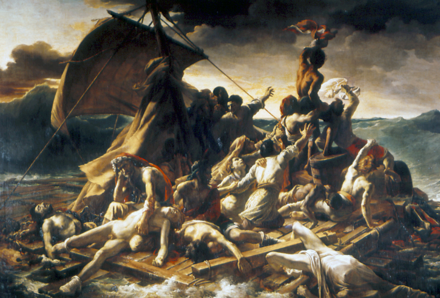
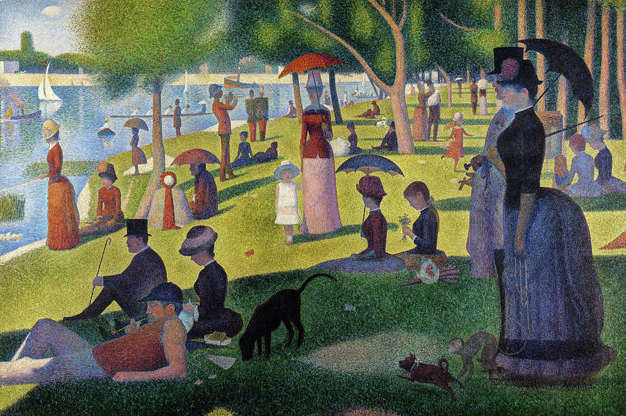

The Raft of the Medusa

This painting here is one of the most important paintings in art history. The Raft of the Medusa by Théodore Géricault is an extraordinary piece of art that tells a sad but true story. It’s the story about how a group of 147 men who’s shipwrecked in the middle of the ocean, and they had to make a raft out of the boat for all of them. So many horrible things happened like murder and cannibalism. They were on the ocean for 13 days and at the end only 15 were alive. The painting was very interesting for the time period, and it is absolute huge in real life, over 20 feet tall and wide. This was one of the most influential pieces in the art period called Romantic period. It had great influence on nineteenth century art.
Mona Lisa

The Mona Lisa is easily the most recognizable and famous piece of art in the world today. It was painted by Leonardo da Vinci in the Renaissance period. It is very beautifully painted, and she is in a portrait type pose, which wasn’t normal back then. What made this painting ultra-famous though was when it was stolen from the Louve museum in Paris in 1911 and was missing for a couple years. When it was eventually found and returned, it became an international sensation in the art world, and now it is still knowns as one of the most famous pieces of art in the world.
Sunday Afternoon

Sunday Afternoon On The Island Of La Grande Jatte, was painted by Georges Seurat in 1886. It was a new type of art style called pointillism, which meant you’d paint with a bunch of tiny dots that would end up making the picture. This was new for the time period and it was a very important piece of art and the shaping of future artist.